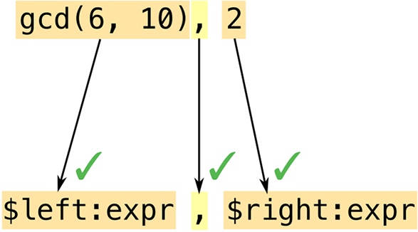
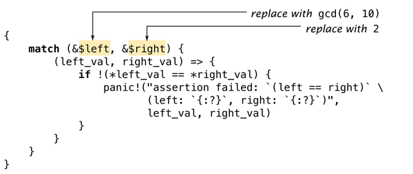

第 22 章 宏指令
《A cento》这首诗完全由引用其他诗人的诗句构成，其名称源自拉丁语中的“拼接”之意。
Rust 支持宏，这是一种超越单纯使用函数所能实现的扩展语言功能的方式。例如，我们看到了 assert_eq! 宏，它在测试场景中非常实用。
assert_eq!(gcd(6,10),2);
这个代码可以被看作是一个通用函数，但是 assert_eq! 宏能够完成一些函数无法实现的任务。例如，当断言失败时， assert_eq! 宏可以使用用户通过额外参数提供的格式字符串来打印错误信息。在 Rust 中，函数无法接受任意数量的参数，而宏则可以，因为它们的运作方式完全不同。
宏是一种简写方式。在编译过程中，在类型检查之前，以及在生成任何机器代码之前，每个宏调用都会被展开——也就是说，它会被替换为一些 Rust 代码。前面的宏调用大致可以展开成这样：
match(&gcd(6,10),&2){(left_val,right_val)=>{if!(*left_val==*right_val){panic!("assertion `left == right` failed\\nleft: {left_val:?}\\nright: {right_val:?}",);}}}
panic! 同样也是一个宏，它会被展开为更多的 Rust 代码（此处未显示）。这些代码又使用了另外两个宏： file!() 和 line!() 。一旦包中的每个宏调用都被完全展开后，Rust 就会进入下一阶段的编译过程。
thread 'main' panicked at gcd.rs:7:5:assertion `left == right` failedleft: 17right: 2
如果你使用的是 C++语言，那么你可能经历过一些使用宏时的糟糕情况。Rust 的宏采用了不同的设计思路，类似于 Scheme 中的 syntax-rules 。与 C++的宏相比，Rust 的宏能够更好地与语言的其他部分集成，因此出错的概率更低。宏调用总是会被加上一个感叹号来标识，这样在阅读代码时就能很容易地分辨出它们。此外，Rust 的宏不会插入不匹配的括号或圆括号。而且，Rust 还提供了模式匹配功能，这使得编写既易于维护又易于使用的宏变得更加容易。
宏观基础知识
图 22-1 展示了 assert_eq! 宏的部分源代码。
macro_rules! 是 Rust 中定义宏的主要方式。需要注意的是，在这个宏定义中，并没有在 assert_eq 之后出现 ! ： ! 只有在调用宏时才会被包含，而在定义宏时则不会使用 ! 。
使用 macro_rules! 定义的宏完全基于模式匹配来工作。宏的主体实际上只是一系列规则的组合。
( pattern1 ) => ( template1 ); ( pattern2 ) => ( template2 ); ...

图 22-1. assert_eq! 宏
在图 22-1 中， assert_eq! 的版本只有一个模式和一个模板。
assert_eq!(gcd(6,10),2);assert_eq![gcd(6,10),2];assert_eq!{gcd(6,10),2}
唯一的区别在于，分号通常在花括号之后是可选的。按照惯例，在调用 assert_eq! 时我们使用括号，在调用 vec! 时使用方括号，在调用 macro_rules! 时则使用花括号。
现在，我们已经展示了宏定义如何被扩展的一个简单例子，以及产生该结果的定义。接下来，我们可以深入探讨一些实际应用的细节了：
宏观扩张的基础
在编译过程中，Rust 会非常早地展开宏。编译器会从头到尾读取你的源代码，并在读取过程中定义和展开宏。你不能在宏定义之前调用它，因为 Rust 会在甚至还没有处理程序的其余部分之前就展开每个宏调用。（相比之下，函数和其他元素则不需要按照特定的顺序调用。比如，可以在包中的某个后续部分才被定义的函数之前调用它。）
当 Rust 展开一个 assert_eq! 宏调用时，其过程类似于评估一个 match 表达式。Rust 会首先根据图 22-2 所示的模式来匹配各个参数。

图 22-2. 扩展宏函数，第一部分：对参数进行模式匹配
宏模式是 Rust 中的一种小型语言结构。本质上来说，宏模式相当于用于匹配代码的正则表达式。不过，正则表达式作用于字符层面，而宏模式则作用于 tokens——也就是构成 Rust 程序的各个元素，如数字、名称、标点符号等。这意味着你可以在宏模式中自由使用注释和空白字符，从而让宏代码尽可能易于阅读。注释和空白字符并不属于 tokens，因此它们不会影响匹配规则。
在这个示例中，我们的模式包含了 $left:expr 这个片段。这意味着 Rust 应该匹配一个表达式（在这里是 gcd(6, 10) ），并将其命名为 $left 。然后，Rust 会将模式中的逗号与 gcd 参数后面的逗号进行匹配。就像正则表达式一样，模式中只有少数特殊字符能够触发有趣的匹配行为；而其他的所有字符，比如这个逗号，都必须原样匹配，否则匹配就会失败。最后，Rust 会匹配 2 这个表达式，并将其命名为 $right 。
这两种代码片段都属于 expr 类型：它们都期望接收表达式作为参数。其他类型的代码片段则会在“代码片段类型”中介绍。
由于这个模式与所有参数都匹配，Rust 会扩展相应的模板（见图 22-3）。

图 22-3. 扩展宏函数，第二部分：填充模板内容
Rust 在匹配过程中会将 $left 和 $right 替换为它找到的代码片段。
在输出模板中错误地使用了片段类型是一个常见的错误——例如，写成 $left:expr 而不是简单的 $left 。Rust 语言并不会立即检测到这种错误。它会将 $left 视为一种替代方式，然后会将 :expr 当作模板中的普通元素来处理，即被包含在宏的输出中。因此，直到调用宏时才会发生错误；那时会产生无法编译的无效输出。如果你在使用新创建的宏时遇到如 cannot find type `expr` in this scope 和 help: maybe you meant to use a path separator here 这样的错误信息，请检查是否犯了这种错误。（关于这种情况的更一般性的建议，可以参考《宏调试》一文。）
宏模板与网页编程中常用的其他几种模板语言并没有太大区别。唯一的区别——而且这是一个重要的区别——在于其输出结果都是用 Rust 语言编写的代码。
意外的后果
将代码片段插入模板与处理普通代码有着本质的区别。这些差异一开始并不容易察觉。我们刚才讨论的宏表达式 assert_eq! 中，有一些相当奇怪的代码片段，这些代码片段揭示了宏编程的一些特殊之处。让我们特别关注其中的两个有趣的地方。
if!($left==$right){panic!("assertion `left == right` failed\nleft: {:?}\nright: {:?}",$left,$right,);}
要回答这个问题，可以尝试在脑海中展开宏调用 assert_eq!(letters.pop(), Some('z')) 。那么输出结果会是什么呢？显然，Rust 会将匹配的表达式插入到模板的多个位置。不过，在构建错误信息时再次计算这些表达式似乎并不是一个好主意——因为这会花费两倍的时间。因为 letters.pop() 会从向量中移除一个元素，所以第二次调用它时会产生不同的结果。这就是为什么真正的宏只计算一次 $left 和 $right ，并存储它们的结果而已。
接下来是第二个问题：为什么这个宏会引用 $left 和 $right 的值呢？为什么不直接将这些值存储在变量中呢？
macro_rules!bad_assert_eq{($left:expr,$right:expr)=>{match($left,$right){(left_val,right_val)=>{if!(left_val==right_val){panic!("assertion failed"/* ... */);}}}};}
对于我们目前所考虑的具体情况来说，当宏参数是整数时，这种处理方式是可行的。但是，如果调用者通过 $left 或 $right 传递了某个变量，那么这段代码就会将变量的值移出作用域！
fnmain(){lets="a rose".to_string();bad_assert_eq!(s,"a rose");println!("confirmed: {s} is a rose");// error: use of moved value "s"}
由于我们不希望断言能够修改值，因此这个宏选择使用引用传递的方式。
你可能想知道，为什么宏中使用的是 match 而不是 let 来定义变量。我们也是这么疑惑的。不过实际上并没有什么特定的原因，使用 let 也是一样的。
简而言之，宏指令能够做到一些令人惊讶的事情。如果你在编写某个宏指令时遇到了奇怪的情况，那么很有可能是该宏指令出了问题。
有一个错误是你不会注意到的，那就是这个经典的 C++宏错误：
// buggy C++ macro to add 1 to a number#define ADD_ONE(n) n + 1
对于大多数 C++程序员来说，这些原因都是显而易见的，这里就不必详细解释了。像 ADD_ONE(1) * 10 或 ADD_ONE(1 << 4) 这样的普通代码使用这个宏时会产生非常奇怪的结果。要解决这个问题，可以在宏定义中添加更多的括号。但在 Rust 中并不需要这样做，因为 Rust 的宏与语言本身融合得更加紧密。Rust 能够识别表达式的构成，因此在将一个表达式插入到另一个表达式时，它会自动添加括号。
重复
标准的 vec! 宏有三种形式：
// New empty Vecletunicorns=vec![];// Repeat a value N timesletbuffer=vec![0_u8;1000];// A list of values, separated by commasletnoodles=vec!["udon","ramen","soba"];
可以这样实施：
macro_rules!vec{()=>{::std::vec::Vec::new()};($elem:expr;$n:expr)=>{::std::vec::from_elem($elem,$n)};($($x:expr),*)=>{<[_]>::into_vec(Box::new([$($x),*]))};}
这里有三个规则。每当 Rust 遇到对这个宏的调用时，它会依次尝试每条规则。如果没有任何规则符合，那么就会产生错误。
这个宏的第一条规则有一个空的模式，因此它只匹配那些没有参数的宏调用： vec![] 。这些宏调用实际上相当于对 Vec::new() 的常规函数调用。
第二条规则处理像 vec![0u8; 1000] 这样的符号使用。实际上，有一个标准的功能（但未被记录），即 std::vec::from_elem ，它能够满足这里的需要，因此这条规则也很简单明了。
第三条规则用于处理 vec!["udon", "ramen", "soba"] 。该模式的第一个部分 $( $x:expr ),* 使用了一种我们之前未曾见过的功能：重复匹配。它可以匹配由逗号分隔的多个表达式。更一般地说， $( PATTERN ),* 这种语法可以用来匹配任何由逗号分隔的列表，而列表中的每个元素都可以与 PATTERN 匹配。
这里的 * 与正则表达式中的含义相同，表示“一个或多个”。不过，需要指出的是，正则表达式并没有专门用来表示重复出现的符号 ,* 。你也可以使用 + 来表示至少匹配一个项，而 ? 则表示匹配零个或多个项。其他符号也可以用作逗号的位置，例如 $( PATTERN );* 可以匹配由分号分隔的列表。表 22-1 列出了所有可用的重复模式。
| 图案/花纹 | 含义/意思 |
|---|---|
$( ... )* |
与 0 次或更多次匹配，无需分隔符 |
$( ... ),* |
匹配 0 次或多次，用逗号分隔 |
$( ... )separator* |
在 0 次或更多次中匹配，用其他标记分隔 |
$( ... )+ |
与 1 个或更多对象进行匹配，且不需要分隔符 |
$( ... ),+ |
匹配 1 次或多次，用逗号分隔 |
$( ... )separator+ |
匹配 1 次或多次，之间用其他标记分隔。 |
$( ... )? |
0 次或 1 次比赛 |
代码片段 $x 不仅仅是一个独立的表达式，而是一系列表达式的集合。这个规则的模板也使用了重复语法：
<[_]>::into_vec(Box::new([$($x),*]))
当然，也有标准的方法可以满足我们的需求。这段代码首先创建一个盒式数组，然后使用 [T]::into_vec 方法来将盒式数组转换为向量。
第一个元素 <[_]> 是一种特殊的表达方式，用来表示“某物的某部分”这种概念，而 Rust 语言能够自动推断出元素的类型。那些以普通标识符命名的类型可以直接用于表达式中，但像 fn() 、 &str 或 [_] 这样的类型则必须放在尖括号中来表示。
在模板的末尾，会出现一个重复的部分，即 $($x),* 。这里的 $(...),* 与我们在模式中看到的语法相同。它会对我们匹配到的 $x 表达式列表进行循环处理，并将这些表达式按照逗号分隔的方式插入到模板中。
在这种情况下，重复输出的结果看起来与输入数据完全相同。但实际上并不一定如此。我们可以这样编写规则：
($($x:expr),*)=>{{letmutv=Vec::new();$(v.push($x);)*v}};
在模板中，第 $( v.push($x); )* 部分会为 $x 中的每个表达式调用 v.push() 函数。虽然宏分支可以展开为一系列表达式，但在这里我们只需要一个表达式即可，因此我们将向量的组装过程封装在一个块中。
我们的 vec 宏有一个小问题。与语言中的其他元素不同，使用 $( ... ),* 的模式不会自动接受 vec![1, 2,] 中的可选尾随逗号。用户期望这种用法在宏中也能正常工作。我们可以通过在第三个模式末尾添加 $( , )? 来实现这一点，如下所示：
($($x:expr),*$(,)?)=>...
内置宏
Rust 编译器提供了一些在定义自己宏时非常有用的宏。这些宏是无法仅用 macro_rules! 来实现的，它们都是硬编码在 rustc 中的。
file!(),line!(),column!()-
file!()展开后是一个字符串字面量，表示当前的文件名。line!()和column!()分别展开为u32类型的字面量，表示当前行和列的位置（从 1 开始计数）。
如果有一个宏调用了另一个宏，而那个宏又调用了另一个宏，而且这些宏都位于不同的文件中；最后那个宏调用的是file!()、line!()或column!()，那么它会展开来显示第一个宏调用的位置。 - 模块路径！()
-
这最终会形成一个字符串，表示到当前模块的 Rust 路径，例如
"fernlib::fronds"，而不是文件路径"/home/fernando/fernlib/src/fronds.rs"。 stringify!(...tokens...)-
该表达式会扩展为一个包含给定标记的字符串字面量。assert!宏会利用这个结构来生成包含断言代码的错误消息。
在参数中调用的宏不会被展开：stringify!(line!())会被展开为字符串"line!()"。 concat!(str0, str1, ...)-
通过连接其参数来创建一个单一的字符串字面量。 compile_error!(message)-
由于给定的错误信息，编译操作停止了。
宏的缺点之一是，当用户代码错误地调用宏时，编译器没有足够的信息来生成有意义的错误提示。在 Rust 中，通常会看到类似“error: 未找到预期的规则
,”这样的错误信息。而宏可以通过包含一种能够匹配常见用户错误并生成带有自定义消息的compiler_error!来提供帮助。
调试宏
调试一个出问题的宏可能会很困难。最大的问题是，我们无法清楚地看到宏扩展的过程。在 Rust 中，系统通常会扩展所有的宏，然后找到某种错误，但随后会打印出一条错误消息，而这条消息并没有显示包含该错误的完整扩展代码！
最简单的方法就是让 Rust 在展开所有宏后显示代码的样子。大多数 Rust 集成开发环境都提供了针对任意宏调用的菜单选项来实现这一功能。或者，你可以使用 cargo-expand 扩展名来安装它，然后通过 cargo install cargo-expand 来查看项目中的任何模块。完全展开后的代码会被打印出来，并显示在终端中。不过，这种方法仅适用于没有语法错误的代码。
其次，Rust 提供了一个 log_syntax!() 宏，它可以在编译时将参数输出到终端。你可以将这个宏用于 println! 风格的调试，以便在宏被展开时观察其执行情况。这个宏需要启用 #![feature(log_syntax)] 功能标志。
第三，你可以要求 Rust 编译器将所有宏调用记录到终端输出中。在代码中某处插入 trace_macros!(true); 符号。从那时起，每次 Rust 展开宏时，都会打印出宏的名称及其参数。例如，考虑这样一个程序：
#![feature(trace_macros)]fnmain(){trace_macros!(true);letbuffer=vec![0u8;64];trace_macros!(false);assert_eq!(buffer.len(),64);}
它产生如下输出：
$cargo+nightlybuildnote: trace_macro--> src/main.rs:7:18|7 | let buffer = vec![0u8; 64];| ^^^^^^^^^^^^^|= note: expanding `vec! { 0u8; 64 }`= note: to `$crate :: vec :: from_elem(0u8, 64)`
编译器会显示每个宏调用的代码，包括扩展之前和之后的状态。第 trace_macros!(false); 行使得跟踪功能再次关闭，因此对 println!() 的调用就不会被跟踪了。
正在构建 JSON 宏指令！
我们已经讨论了 macro_rules! 的核心功能。在本节中，我们将逐步开发一个用于构建 JSON 数据的宏。我们将通过这个例子来展示如何开发一个宏，同时还会介绍 macro_rules! 中剩余的几个部分，并给出一些建议，以确保你的宏能够按照预期的方式运行。
在第十章中，我们介绍了这种用于表示 JSON 数据的枚举类型：
#[derive(Clone, PartialEq, Debug)]enumJson{Null,Boolean(bool),Number(f64),String(String),Array(Vec<Json>),Object(Box<HashMap<String,Json>>),}
遗憾的是，用于编写 Json 值的语法相当冗长：
letstudents=Json::Array(vec![Json::Object(Box::new(vec![("name".to_string(),Json::String("Jim Blandy".to_string())),("class_of".to_string(),Json::Number(1926.0)),("major".to_string(),Json::String("Tibetan throat singing".to_string())),].into_iter().collect())),Json::Object(Box::new(vec![("name".to_string(),Json::String("Jason Orendorff".to_string())),("class_of".to_string(),Json::Number(1702.0)),("major".to_string(),Json::String("Knots".to_string())),].into_iter().collect())),]);
我们希望能够使用一种更类似于 JSON 的语法来编写这段代码：
letstudents=json!([{"name":"Jim Blandy","class_of":1926,"major":"Tibetan throat singing"},{"name":"Jason Orendorff","class_of":1702,"major":"Knots"}]);
我们想要的是一个 json! 宏，它能够接受一个 JSON 值作为参数，然后展开成一个类似前面例子中所示的 Rust 表达式。
片段类型
在编写复杂的宏代码时，首要的任务就是找出如何匹配或解析所需的输入数据。
macro_rules! json {
(null) => { Json::Null };
([ ... ]) => { Json::Array(...) };
({ ... }) => { Json::Object(...) };
(???) => { Json::Boolean(...) };
(???) => { Json::Number(...) };
(???) => { Json::String(...) };
}
这种表述并不完全正确，因为宏观模式并没有办法来区分最后三种情况。不过，我们稍后会找到解决这个问题的办法。至少，前三种情况显然是以不同的标记开始的，所以我们就从这些情况开始讨论吧。
第一条规则已经生效了：
macro_rules!json{(null)=>{Json::Null};}#[test]fnjson_null(){assert_eq!(json!(null),Json::Null);// passes!}
为了支持 JSON 数组，我们可以尝试将数组中的元素作为 expr 的形式进行匹配：
macro_rules!json{(null)=>{Json::Null};([$($element:expr),*])=>{Json::Array(vec![$($element),*])};}
不幸的是，并非所有 JSON 数组都符合这种情况。下面有一个示例可以说明这个问题：
#[test]fnjson_array_with_json_element(){letmacro_generated_value=json!([// valid JSON that doesn't match `$element:expr`{"pitch":440.0}]);lethand_coded_value=Json::Array(vec![Json::Object(Box::new(vec![("pitch".to_string(),Json::Number(440.0)),].into_iter().collect())),]);assert_eq!(macro_generated_value,hand_coded_value);}
模式 $( $element:expr ),* 表示“一个由逗号分隔的 Rust 表达式列表”。不过，许多 JSON 值，尤其是对象形式的数据，并不属于有效的 Rust 表达式。因此，它们不会匹配成功。
由于并非所有你想匹配的代码片段都能用表达式来表示，因此 Rust 支持几种其他的数据类型，具体如表 22-2 所示。
| 碎片类型 | 匹配情况（附示例） | 可以在...之后继续跟随。 |
|---|---|---|
expr |
一种表达方式：
|
=> , ; |
stmt |
一个表达式或声明，不包括末尾的分号。 （难以使用；请尝试使用 |
=> , ; |
ty |
一种类型：
|
=> , ; = | { [ : > as where |
path |
|
=> , ; = | { [ : > as where |
pat |
|
=> , = | if in |
item |
|
任何东西 |
block |
|
任何东西 |
meta |
|
任何东西 |
literal |
一个字面值：
|
任何东西 |
lifetime |
一生的时间：
|
任何东西 |
vis |
可选的可见性说明符：
|
任何东西 |
ident |
一个标识符：
|
任何东西 |
tt |
一个标记树（参见文本描述）：
|
任何东西 |
该表格中的大多数选项都严格遵循 Rust 语法。例如， expr 类型仅适用于 Rust 表达式（而非 JSON 值）， ty 则仅适用于 Rust 类型等。这些类型不具备扩展性：无法定义新的算术运算符或新关键字，因为 expr 无法识别这些新元素。因此，我们无法将任何可变的 JSON 数据与之匹配。
最后两个参数， ident 和 tt ，可以匹配那些看起来不像是 Rust 代码形式的宏参数。 ident 可以匹配任何标识符； tt 则只能匹配一个标记树——要么是正确匹配的括号对，如 (...) 、 [...] 或 {...} ；要么就是嵌套的标记树；要么就是不是括号的单个标记，比如 1926 或 "Knots" 。
macro_rules!json{(null)=>{Json::Null};([$($element:tt),*])=>{Json::Array(...)};({$($key:tt:$value:tt),*})=>{Json::Object(...)};($other:tt)=>{...// TODO: Return Number, String, or Boolean};}
这个版本的 json! 宏可以匹配所有 JSON 数据。现在我们只需要编写正确的 Rust 代码即可。
为了确保 Rust 在未来能够添加新的语法特性，同时不会破坏你现在编写的宏代码，Rust 限制了某些标记在片段之后出现的机会。表 22-2 中的“可以后接…”一列列出了允许使用的标记。例如， $x:expr ~ $y:expr 这种格式是错误的，因为 ~ 不能出现在 expr 之后。而 $vars:pat => $handler:expr 这种格式是允许的，因为 $vars:pat 后面跟着的是箭头 => ，而 pat 后面通常什么都不跟随，这也是允许的。
宏中的递归
你已经看到过一个简单的宏调用自身的例子：我们的 vec! 实现中使用了递归来处理尾随逗号的问题。现在我们可以展示一个更典型的例子： json! 需要递归调用自身。
([$($element:tt),*])=>{Json::Array(vec![$($element),*])};
但这种做法是行不通的。我们试图将 JSON 数据（即 $element 令牌树结构）直接拼入 Rust 语言的表达式中，而 JSON 数据和 Rust 语言是完全不同的两种语言，不能直接进行这种混合操作。
我们需要将数组中的每个元素从 JSON 格式转换为 Rust 格式。幸运的是，有一个宏可以做到这一点——正是我们正在编写的这个宏！
([$($element:tt),*])=>{Json::Array(vec![$(json!($element)),*])};
对象可以以相同的方式得到支持：
({$($key:tt:$value:tt),*})=>{Json::Object(Box::new(vec![$(($key.to_string(),json!($value))),*].into_iter().collect()))};
编译器对宏的递归调用次数设有限制：默认情况下为 128 次。这对于普通的宏使用来说已经足够了，但复杂的递归宏有时会达到这个限制。你可以在包含宏的模块中添加一个属性来调整这一限制。
#![recursion_limit ="256"]
我们的 json! 宏已经几乎完成了。现在只需要支持布尔值、数字值以及字符串值了。
在宏中使用特质
编写复杂的宏代码总是会带来一些难题。重要的是要记住，宏本身并不是唯一的解决问题工具。
macro_rules!json{(true)=>{Json::Boolean(true)};(false)=>{Json::Boolean(false)};...}
这种方法很快就会失效。虽然只有两种布尔值，但实际上使用的数字数量比这要多得多，而字符串的数量则更多了。
幸运的是，有一种标准的方法可以将各种类型的值转换为指定类型：即使用 From trait。我们只需要为几种类型实现这个 trait 即可。
implFrom<bool>forJson{fnfrom(b:bool)->Json{Json::Boolean(b)}}implFrom<i32>forJson{fnfrom(i:i32)->Json{Json::Number(iasf64)}}implFrom<String>forJson{fnfrom(s:String)->Json{Json::String(s)}}impl<'a>From<&'astr>forJson{fnfrom(s:&'astr)->Json{Json::String(s.to_string())}}...
实际上，这 12 种数字类型应该都有非常相似的实现方式。因此，编写一个宏来避免重复粘贴代码可能是有意义的做法。
macro_rules!impl_from_num_for_json{($($t:ident)*)=>{$(implFrom<$t>forJson{fnfrom(n:$t)->Json{Json::Number(nasf64)}})*};}impl_from_num_for_json!(u8i8u16i16u32i32u64i64u128i128usizeisizef32f64);
现在我们可以使用 Json::from(value) 来将任何支持的类型中的 value 转换为 Json 。在我们的宏中，它将会呈现为这样：
($other:tt)=>{Json::from($other)// Handle Boolean/number/string};
在我们的 json! 宏中添加这条规则后，它已经通过了我们迄今为止编写的所有测试。综合所有内容来看，目前的实现效果如下：
macro_rules!json{(null)=>{Json::Null};([$($element:tt),*])=>{Json::Array(vec![$(json!($element)),*])};({$($key:tt:$value:tt),*})=>{Json::Object(Box::new(vec![$(($key.to_string(),json!($value))),*].into_iter().collect()))};($other:tt)=>{Json::from($other)// Handle Boolean/number/string};}
结果表明，该宏允许在 JSON 数据中使用变量，甚至可以使用任意 Rust 表达式。这真是一个很实用的额外功能啊！
letwidth=4.0;letdesc=json!({"width":width,"height":(width*9.0/4.0)});
因为 (width * 9.0 / 4.0) 被括在括号中，所以它本质上是一棵标记树结构。因此在解析该对象时，宏 $value:tt 能够成功匹配到它。
范围界定与卫生问题
编写宏代码有一个令人惊讶的复杂点，那就是需要将来自不同作用域的代码拼接在一起。接下来的几页将介绍 Rust 处理作用域的两种方式：一种适用于局部变量和参数，另一种则适用于其他所有情况。
({$($key:tt:$value:tt),*})=>{{letmutfields=Box::new(HashMap::new());$(fields.insert($key.to_string(),json!($value));)*Json::Object(fields)}};
现在，我们不是使用 collect() 来填充 HashMap ，而是通过反复调用 .insert() 方法来实现这一操作。这意味着我们需要将一个映射对象存储在一个临时变量中，我们将其命名为 fields 。
但是，如果调用 json! 的代码实际上使用了自己定义的变量，而这个变量也叫 fields ，那么会发生什么呢？
letfields="Fields, W.C.";letrole=json!({"name":"Larson E. Whipsnade","actor":fields});
在扩展宏时，会将两段代码合并在一起，尽管这两个代码都使用了名为 fields 的名称，但它们的作用却各不相同！
letfields="Fields, W.C.";letrole={letmutfields=Box::new(HashMap::new());fields.insert("name".to_string(),Json::from("Larson E. Whipsnade"));fields.insert("actor".to_string(),Json::from(fields));Json::Object(fields)};
当宏使用临时变量时，这种问题似乎是无法避免的。你可能已经在思考可能的解决方案了。或许我们应该重新命名宏中定义的变量，让调用该宏的代码无法传入这个变量。例如，可以将变量命名为 __json$fields ，而不是 fields 。
令人惊讶的是，这种宏定义竟然可以正常工作。Rust 会自动为变量重新命名！这一功能最初是在 Scheme 的宏中实现的，被称为“卫生性规则”。因此，可以说 Rust 具有“卫生性宏”。
因此，不同颜色的变量会被视为具有不同的名称：
let fields = "Fields, W.C.";
let role = {
let mut fields = Box::new(HashMap::new());
fields.insert("name".to_string(), Json::from("Larson E. Whipsnade"));
fields.insert("actor".to_string(), Json::from(fields));
Json::Object(fields)
};
请注意，那些由宏调用者传递进来并嵌入到输出中的代码片段，比如 "name" 和 "actor" ，仍然保持原有的颜色（黑色）。只有那些源自宏模板的标记才会被着色。
（在调用函数中声明），另一个变量名为 现在有一个变量名为 fieldsfields （由宏引入）。由于这两个变量的名称颜色不同，因此不会混淆它们。
如果宏确实需要引用调用者作用域中的变量，那么调用者就必须将变量的名称传递给宏。
（这个“油漆”的比喻并不是对“ Hygiene 机制”的准确描述。实际的运作机制要复杂一些，它能够识别两个标识符为相同的值，而不管它们是否涉及到“油漆”这一元素。只要这两个标识符指的是同一个在宏及其调用者都适用的变量，那么这种情况就发生了。不过，在 Rust 中这种情况非常罕见。如果你理解了前面的例子，那么你就已经足够了解如何正确使用这些具有 Hygiene 特性的宏了。）
你可能已经注意到，当宏被展开时，许多其他标识符都会被涂成一种或多种颜色：例如 Box 、 HashMap 和 Json 等。尽管有这些颜色标记，Rust 仍然能够轻松识别这些类型名称。这是因为 Rust 中的类型检查仅适用于局部变量和参数。至于常量、类型、方法、模块、静态成员以及宏名称，Rust 是“色盲的”——它们不会被标记颜色。
这意味着，如果我们的 json! 宏在某个模块中被使用，而该模块中不存在 Box 、 HashMap 或 Json 这些变量，那么宏将无法正常工作。我们将在下一节介绍如何避免这个问题。
首先，我们考虑一种情况：Rust 的严格卫生规则带来了一些麻烦，我们需要对其进行修改。假设我们有许多函数包含这样的代码行：
letreq=ServerRequest::new(server_socket.session());
复制粘贴那一行文字真是麻烦事。我们能不能使用宏来自动处理呢？
macro_rules!setup_req{()=>{letreq=ServerRequest::new(server_socket.session());};}fnhandle_http_request(server_socket:&ServerSocket){setup_req!();// declares `req`, uses `server_socket`...// code that uses `req`}
按照当前的写法，这样是行不通的。在宏中需要使用 server_socket 来引用函数中声明的局部变量 server_socket ，同样地， req 这个变量也需要通过 server_socket 来引用。不过，出于代码整洁性的考虑，宏中的变量名称应避免与其他作用域中的变量名称产生冲突——即使在这种情况下，我们仍然希望让这些变量能够相互引用。
解决方案是在宏代码中传递你计划使用的所有标识符，无论是在宏代码内部还是外部使用。
macro_rules!setup_req{($req:ident,$server_socket:ident)=>{let$req=ServerRequest::new($server_socket.session());};}fnhandle_http_request(server_socket:&ServerSocket){setup_req!(req,server_socket);...// code that uses `req`}
由于 req 和 server_socket 现在由该函数提供，所以它们是该作用域中合适的“颜色”值。
“卫生”这个宏变量在使用时会让代码显得稍微复杂一些，但這其实是一种特性，而非缺陷：只要知道这些“卫生”宏变量不会在背后修改局部变量，那么理解它们的用法就变得容易多了。如果你在函数中搜索像 server_socket 这样的标识符，就能找到所有使用它的地方，包括那些被宏调用的地方。
导入和导出宏
由于宏在编译的早期阶段就被展开了，而在 Rust 还不知道项目的完整模块结构之前，关于宏的作用域以及如何导入和导出宏的规则就有些特殊了。
macro_rules!ping{...}pub(crate)useping;
其他模块可以像使用该模块中的其他功能一样来使用这个宏。如果上述代码位于 sonar 模块中，那么在其他模块中可以通过编写 use crate::sonar::ping; 来导入它，然后调用 ping!() 。或者，如果你愿意，也可以直接写出宏的完整路径来使用它，即 crate::sonar::ping!() 。
要导出宏，请使用 #[macro_export] 属性标记其定义位置：
/// ...documentation for `select!` macro...#[macro_export]macro_rules!select{...}
这导致该宏会从你的项目的根模块中导出，而不管该宏是在哪里定义的。例如，Tokio 中的 select! 宏定义在文件 src/macros/select.rs 中，但它仍然被导出为 tokio::select! ，而不是 tokio::macros::select::select! 。
#[doc(hidden)]#[macro_export]macro_rules!_secret_macro_sweep{...}/// ...documentation for `sweep!`...pubuse_secret_macro_sweepassweep;
如果这段代码位于 src/monsters/broom.rs 文件中，而 monsters 和 monsters::broom 都是公共变量，那么这个宏可以从外部 crate 访问，即可以通过 my_crate_name::monsters::broom::sweep! 来访问，而在 crate 内部则可以通过 crate::monsters::broom::sweep! 来访问。
相反，宏应该对其使用的所有名称都使用绝对路径。 macro_rules! 提供了特殊的标记 $crate 来帮助实现这一点。这与 crate 不同， crate 是一个可以在任何路径中使用的关键字，而 $crate 则属于绝对路径，指向定义宏的 crate 的根模块。我们可以写成 $crate::Json 而不是 Json ，即使 Json 没有被导入，这种方法仍然有效。 HashMap 可以改为 ::std::collections::HashMap 或 $crate::macros::HashMap 。在后者的情况下，我们必须重新导出 HashMap ，因为 $crate 无法用于访问 crate 的私有功能。实际上，这些标记最终都展开为普通的路径 ::jsonlib 。可见性规则不会受到影响。
// macros.rspubusestd::boxed::Box;pubusestd::collections::HashMap;pubusestd::string::ToString;#[macro_export]macro_rules!json{(null)=>{$crate::Json::Null};([$($element:tt),*])=>{$crate::Json::Array(vec![$($crate::json!($element)),*])};({$($key:tt:$value:tt),*})=>{{letmutfields=$crate::macros::Box::new($crate::macros::HashMap::new());$(fields.insert($crate::macros::ToString::to_string($key),$crate::json!($value),);)*$crate::Json::Object(fields)}};($other:tt)=>{$crate::Json::from($other)};}
由于 .to_string() 方法是标准 ToString trait 的一部分，因此我们也可以使用 $crate 来指代它。这种用法是我们在“完全限定方法调用”中介绍过的语法： $crate::macros::ToString::to_string($key) 。在我们的例子中，为了使得宏能够正常工作，这种完全限定的方法调用并不是必需的，因为 ToString 已经包含在标准的 prelude 中了。不过，如果你需要调用一个在宏被调用时可能不在作用域内的 trait 的方法，那么使用完全限定方法调用才是正确的方式。
超越宏观规则！
宏模式能够解析比 JSON 更复杂的输入，但复杂性很快就会变得难以控制。作为替代方案，Rust 提供了过程式宏，这是一种在构建过程中扩展代码的更通用机制。过程式宏无法使用 macro_rules! 模式匹配功能。它们更像是编译器的扩展。每个过程式宏都被实现为一个普通的 Rust 函数，该函数作用于 Rust 标记，而编译器在需要展开宏时就会调用这个函数。
这些细节超出了本书的讨论范围。想要了解更多信息，请参阅相关文档以及 syn crate 的示例代码。
如果您的代码生成需求超出了宏的功能范围，您可以改用构建脚本来实现。Cargo 的文档详细说明了如何操作。具体步骤包括：编写一个程序来生成所需的 Rust 代码；在 Cargo.toml 配置文件中添加一条指令，使该程序能够作为构建过程的一部分运行；然后使用 include! 将生成的代码引入到您的项目中。